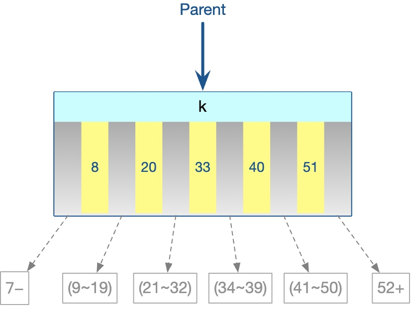
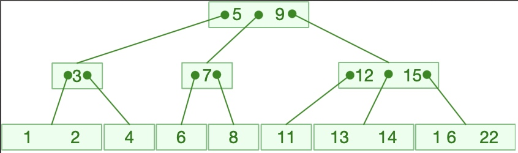

多路搜索树又称B~Tree、B树、B-Tree 树或者B-树(不念“B减树”！)。B-Tree是一种自平衡树，插入和删除都需要维护。
B-Tree 主要用在文件系统以及部分数据库索引，比如 MongoDB。
概念
B-Tree 是一种多路平衡查找树，每个节点最多包含 ''m'' 个子节点(分支)和 ''m-1'' 个元素(关键字)，m被称为B-Tree的阶，阶一般大于等于3。(数据库索引树中，m 的大小取决于磁盘页的大小。)
一个m阶的B-Tree有如下特征：
- 根节点至少有两个孩子(分支)和一个关键字；
- 每个中间节点都包含 ''k-1'' 个元素(关键字)和 ''k'' 个分支(\(\lceil\frac{m}{2}\rceil\le k\le m\))；
- 每个叶子节点都包含 ''k-1'' 个元素(关键字)(\(\frac{m}{2}\le k\le m\))；
- 所有的叶子节点都位于同一层；可以用空指针表示，是查找失败到达的位置；
- 每个节点中的元素(关键字)从小到大排列，节点中的 ''k-1'' 个元素（关键字）正好是 ''k'' 个分支包含的元素(关键字)的值域分划。
所以B-Tree的每个节点的结构是这样的：

节点中每个元素\(k_i\)应满足\(k_i<k_{i+1}\)，同时每个分支\(p_i\)的范围应满足\(k_i<p_i<k_{i+1}\)
(在这个过程中，随着元素的增多，实际情况下内存中比较次数可能很多，但是内存的比较时间与磁盘 IO 消耗相比几乎可以忽略不计。)
操作
寻找
- 从根节点开始，所寻找的值依次和节点的k-1个关键字比较：
- 若小于该关键字，那么进入该关键字左侧的分支重复搜索动作；
- 若等于该关键字，就是找到了；
- 若大于该关键字，
- 若这是该节点的最后一个关键字，那么进入该关键字右侧的分支重复搜索动作；
- 若不是最后一个关键字，所搜索值继续和下一个关键字比较。
- 同时，如果进入的分支是NULL，说明没有找到匹配的值，退出搜索。

以上图为例：
- 寻找“3”：根节点看第一个关键字【3<5】故到第一个分支，随后有【3==3】，找到。
- 寻找“13”：根节点看第一个关键字【13>5】故看第二个关键字【13>9】故到第三个分支，随后看第一个关键字【13>12】故看第二个关键字【13<15】故到第二个分支，随后看第一个关键字【13==13】，找到。
- 寻找“10”：根节点看第一个关键字【10>5】故看第二个关键字【10>9】故到第三个分支，随后看第一个关键字【10<12】故到第一个分支，随后看第一个关键字【10<11】故到第一分支，由于第一分支是NULL，所以没有找到。
插入
首先明确，对于一个阶为m的B-Tree：
- 根节点的关键字容量为\(1\sim\left(m-1\right)\)；
- 中间节点和叶子节点的关键字容量为\(\left(\lceil\frac{m}{2}\rceil -1\right)\sim\left(m-1\right)\)。
插入关键字可能会破坏B-Tree的规则(节点容量超过上限)，解决方法就是 ''拆分节点''。
- Step 0：如果这是一颗空树，填入根节点的第一个关键字；
- Step 1：搜索触底，插入的值应当是树中没有的(如果允许插入重复元素，要改一改判断语句)，所以最后会到达一个NULL的分支，根据规则此时一定会在叶子层(也就是最底层)；
- Step 2：尝试把这个值作为关键字，和节点中的其他几个关键字排一下序，共同作为该节点新的关键字序列；
- Step 3：看新关键字数量是否超过了节点容量上限：
** 如果没有超过，新的关键字序列存入该节点；
** 如果超过了，就取序列中间(如果有两个中间的就取一个)的一个关键字，两侧的关键字分裂为两个新的节点接在选出的关键字两侧。把这个选出的关键字插入上一层节点中(调回执行Step 2)——如果之前的节点是根节点就把该关键字作为新的根节点。
这是一个4阶B-Tree插入的例子，允许插入重复元素，动画来自 [[USFCA 数据结构可视化|https://www.cs.usfca.edu/~galles/visualization/BTree.html]]
：
删除
删除关键字可能会破坏B-Tree的规则(节点容量小于下限)，解决方法是：''向其兄弟结点借关键字''、''与子结点进行关键字交换''或''进行结点的合并''。其中，和当前结点的孩子进行关键字交换的操作可以保证删除操作总是发生在终端结点上。网上所总结的调整方法过于复杂，这里使用一种简洁统一的方法：
- Step 0：如果这是一颗空树，或者没有找到要删除的值，返回。
- Step 1：删除节点(递归向下)
- 如果要删除的值在叶子节点，那么先直接删除：
- 如果要删除的值在非叶子节点，那么：
- 如果该点左侧和右侧的分支，都没有达到最小容量下限，就拿左侧最大关键字或者右侧最小关键字(Y)来替换它(X)，然后再递归删除那一个最值关键字(Y)；
- 如果该点左侧已达到下限而右侧没有，就用右侧最小替换然后递归删除；
- 如果该点右侧已达到下限而左侧没有，同理；
- 如果该点左右两侧分支都达到最小下限，就直接删除该关键字，并将右侧分支合并入左侧分支变成一个分支。
- Step 3：调整节点
- 如果删除之后该点的关键字数量不少于容量下限，不用作调整，完成删除。
- 如果删除之后该点的关键字数量少于容量下限：
- 如果其右侧和左侧的兄弟节点的关键字数量都大于容量下限，取左侧兄弟节点与该节点之间的父节点关键字放入该节点，再取左侧兄弟节点的最大关键字替换父节点的关键字 ''(左旋)'' ，然后递归到删除左侧兄弟节点最大关键字；或者取右侧兄弟节点与该节点之间的父节点关键字放入该节点，再取右侧兄弟节点的最小关键字替换父节点的关键字 ''(右旋)'' ，然后递归到删除右侧兄弟节点最小关键字；
- 如果其左侧兄弟节点的关键字数量大于容量下限，而右侧兄弟节点的关键字数量等于容量下限，那么只能用左边来做；
- 如果其右侧兄弟节点的关键字数量大于容量下限，而左侧兄弟节点的关键字数量等于容量下限，反之；
- 如果两侧兄弟节点的关键字数量都等于容量下限，那么把左侧节点的关键字、左侧和该节点之间父节点的关键字和该节点剩余的关键字合并到一起成为新的左侧兄弟节点，删除父节点对应关键字和该节点；或者拿右侧做(同理)；
- Step 4：递归向上，继续第三步调整
这里有一个删除的例子。
以上算法的复杂度均为\(O\left(\log_{M-1}{N}\right)\sim O\left(\log_{M/2}{N}\right)\)。
这种效率是很高的，对于N=6.2×1010 个节点，如果度为1024，则只需要小于4次即可定位到该节点，然后再采用二分查找即可找到要找的值。